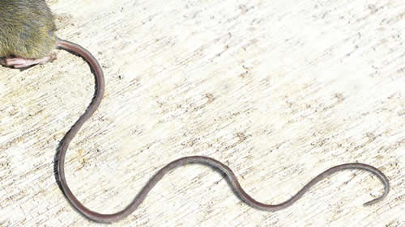

Real Chubut - Agencia de Noticias


La larga cola del ratón

Ya son doce las muertes. La última se produjo en Entre Ríos, luego de las de Chubut y Salta. También hay internados en Lomas de Zamora, Lanús y San Pedro. En Epuyén alertan sobre la discriminación que sufren, mientras crecen las críticas al Gobierno por haber desarticulado los equipos de prevención y control.
El hantavirus, en sus diferentes cepas, sigue impactando más allá de las fronteras patagónicas. Ayer se confirmó que un hombre falleció en el hospital Centenario de Gualeguaychú, Entre Ríos y lleva la cuenta a 12 en todo el país. Y otras dos personas permanecen internadas en Lanús y en San Pedro, con síntomas que podrían corresponder con el virus. Además del internado en Terapia Intensiva del Hospital Gandulfo, de Lomas de Zamora, informado ayer. Las autoridades confirmaron que ninguno de estos casos es semejante a la cepa Andes, que se disparó en Chubut. Pero la respuesta del Gobierno frente al brote de hantavirus que atraviesa el país sigue cosechando críticas por la falta de medidas de prevención. Las últimas apuntaron contra el degradado ex ministro de Ambiente y Desarrollo Sustentable, ahora convertido en Secretaría, que conduce Sergio Bergman, por no haber aplicado protocolos de estudio y análisis de la población de los roedores que transmiten el virus hanta.
“No puede ser que la Secretaría no ponga a disposición biólogos que estudien la dinámica de la población de estos roedores. No puede haber un grupo multidisciplinario sin estos biólogos. Si no me quieren a mí que llamen a otro”, se indignó Guillermo Andrés Varela, experto en la dinámica de población de roedores, con especialidad en trabajo de campo, que hasta 2016 coordinó un programa en el ámbito de la Secretaria de Ambiente y fue despedido por la gestión de Bergman.
Varela denunció la ausencia del secretario Bergman ante el brote de hantavirus como “incumplimiento de deberes de funcionario público”. “¿Dónde está? Por ley su cartera debería actuar y colaborar con la Secretaría de Salud con acciones preventivas ante las emergencias naturales y catástrofes climáticas. Es notable la ausencia del Ministerio de Ambiente frente a este brote”, criticó el especialista.
Las críticas del investigador se centran en la falta de estudio del vector que transmite el hantavirus, las llamadas “causas” del brote y no tanto las consecuencias, y en la necesidad de “respuestas clínicas y de tratamiento” que ahora debe dar la Secretaría de Salud.
“Se sabe que hay al menos cuatro cepas del hantavirus, en al menos cinco lugares de la Argentina, que se transmite por distintos ratones. Pero no tenemos idea de cómo han ido evolucionando estos ratones a partir de 2015, cuando desarticularon todos los programas y ya no hay biólogos en estas mesas disciplinarias”, advirtió el investigador, quien trabajó durante 15 años en el antiguo ministerio como responsable del programa Trabajo y Desarrollo Sustentable.
Varela diferenció el trabajo del Instituto Malbrán que, con infectólogos y médicos, se dedica al análisis de la cepa y de los tratamientos. Según su crítica, la Secretaría de Ambiente debería aportar especialistas que estudien la dinámica de la población de ratones, su alimentación, su reproducción y su movimiento en diferentes zonas del país. “No se sabe absolutamente nada de esto y lo importante es entender cómo se está moviendo esta población”, agregó.
“La estigmatización que están haciendo con el pueblo de Epuyén es terrible. Pero si no estudian el ratón, ¿cuál es la solución? Van a aislar a Epuyén y después a Chubut. Después van a decir que no se puede ir a la Patagonia”, ironizó el investigador.
Ayer se confirmó que un hombre murió por hantavirus en la localidad de Gualeguaychú, Entre Ríos. Y además, como informó este diario, se confirmó un caso en Lomas de Zamora y hay otros dos de los que se sospechosa su sintomatología, en otras localidades de la provincia de Buenos Aires.
El Ministerio de Salud de Entre Ríos confirmó que un trabajador rural de la zona de islas del departamento de Gualeguay falleció el 10 de enero por hantavirus. “Recientemente nos confirmaron desde el Instituto Malbrán que los resultados de laboratorio dieron positivo para Hantavirus”, afirmó Diego Garcilazo, director de Epidemiología de la provincia. El funcionario dijo que el hombre fallecido ingresó al hospital el 8 de enero con “un síndrome febril inespecífico” y fue internado Unidad de Terapia Intensiva. Para determinar de qué se trataba, iniciaron una investigación epidemiológica.
“En Entre Ríos no hemos tenido brotes de esta enfermedad que preocupen sólo casos aislados autóctonos”, explicó Garcilazo. El Ministerio de Salud provincial publicó en un comunicado que el caso de Gualeguay no presenta las mismas características que los de Epuyén. Asimismo, desde la institución aseguraron que continuarán con “la vigilancia epidemiológica” y que “se realizará un seguimiento de las personas allegadas directamente al fallecido”.
En la provincia de Buenos Aires se confirmó un caso de hantavirus en un hospital de Lomas de Zamora. El paciente es un hombre de 26 años que habría contraído el virus en diciembre mientras trabajaba en un tambo en el partido de San Andrés de Giles. El hombre, que vive en el partido Almirante Brown, está internado en el Hospital Gandulfo. Marcelo Dallorso, director asociado del centro de salud, aseguró que el caso es autóctono, que “no reviste gravedad epidemiológica” y que es el primero registrado en la provincia de Buenos Aires. “Es un hecho aislado, en la provincia viven 15 millones de personas”, afirmó.
Respecto a la salud del paciente, Dallorso informó que evoluciona favorablemente, aunque todavía permanece internado. “El paciente está lúcido, con ganas de salir de terapia intensiva. Cuando lo saquemos de terapia no va a estar aislado. Esperamos poder recuperarlo de forma completa, no esperamos que tenga ninguna secuela. Estamos muy contentos por su evolución”, dijo el médico. Además, la Secretaría de Salud del partido bonaerense de Almirante Brown informó que realizó “un control de foco con detección de roedores, desratización, fumigación y desmalezamiento” en el domicilio del paciente.
El ministro de Salud bonaerense, Andrés Scarsi, subrayó que este es el único caso confirmado en la provincia y que “no se trata del mismo virus que Epuyén”. Scarsi explicó que “el momento de mayor incidencia de la enfermedad se da de noviembre a marzo” y contó que por esta razón aumentaron “el alerta y el trabajo en epidemiología”. Para prevenir la transmisión de la enfermedad, el ministro recomendó “estar alerta” en lugares donde pueden concentrarse ratones, “ventilar el lugar, desmalezar si el pasto está largo y, ante cualquier síntoma, alertar a la autoridad sanitaria”.
Por su parte, el gobierno bonaerense analiza dos posibles casos de hantavirus en los distritos de Lanús y San Pedro. El primero es un hombre de 29 años que se encuentra “estable” y el segundo, un hombre de 41 años “que está compensado desde lo clínico y en buen estado”. Ambos casos están siendo estudiados para determinar si se trata de hantavirus.
Aunque no fue notificado oficialmente, existe un posible caso de hantavirus en la localidad de Garín, partido de Escobar. Se trata de un joven de 26 años que se encuentra internado en terapia intensiva en la Clínica Fátima, en Pilar.
Fuente: Pagina 12